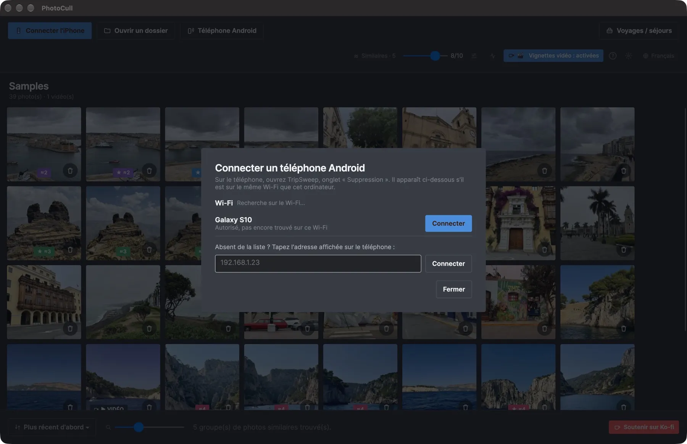

Triez des milliers de photos d'iPhone et d'Android sur Mac ou PC
PhotoCull est une application de bureau à part entière : elle affiche tout le rouleau de votre iPhone ou de votre téléphone Android regroupé par séjour, compare vos photos côte à côte, et supprime en masse ce qui ne vaut plus la peine d'être gardé — directement depuis votre Mac ou votre PC.

Un aperçu de l'app



Connectez votre téléphone en une minute
Au premier lancement, PhotoCull demande où sont vos photos et vous guide pas à pas.
iPhone, en USB
Mac et Windows. Branchez l'iPhone, déverrouillez-le et touchez « Se fier », puis cliquez sur « Connecter l'iPhone ». Sous Windows, installez d'abord l'app gratuite Appareils Apple.
Android, en Wi-Fi
Mac et Windows. Ouvrez l'onglet « Suppression » de TripSweep sur le téléphone, cliquez sur « Téléphone Android » dans PhotoCull et choisissez votre téléphone. Autorisez l'ordinateur une fois : le même code à 4 chiffres s'affiche des deux côtés.
Android, en USB
Windows. Branchez le téléphone, choisissez « Transfert de fichiers » dans sa notification USB, puis cliquez sur « Téléphone Android » et « Connecter en USB ». Un Mac ne lit pas les téléphones Android en USB : passez par le Wi-Fi.
Un dossier
N'importe quel dossier de votre ordinateur ou d'un disque : cliquez sur « Ouvrir un dossier » ou glissez-le sur la fenêtre. Sans téléphone, sans limite quotidienne.
Ce que fait l'app
Vue "Voyages / séjours"
Toute votre photothèque regroupée automatiquement par séjour (temps ET lieu, comme l'app iOS) — pour repérer d'un coup d'œil les voyages qui prennent le plus de place.
Comparaison côte à côte
Affichez jusqu'à 6 photos similaires en même temps pour choisir la meilleure — idéal pour trier les rafales et les quasi-doublons.
Suppression en masse, en toute sécurité
Marquez des centaines de photos en quelques clics. La suppression réelle passe par l'app TripSweep sur votre téléphone et sa corbeille (30 jours) — jamais de suppression définitive immédiate.
Le poids qui compte
Triez et filtrez par séjour d'1 jour, par lieu exclu (domicile, travail...), par poids — les mêmes filtres que sur l'app iOS, pensés pour aller vite.
Connexion directe au téléphone
Branchez votre iPhone en USB, ou connectez votre téléphone Android en Wi-Fi (ou en USB sous Windows) : PhotoCull lit votre rouleau directement, sans cloud ni serveur.
100 % sur l'appareil
Aucune photo, aucune position GPS n'est jamais envoyée où que ce soit. La reconnaissance des lieux fonctionne entièrement en local, sans compte ni abonnement.
Gratuit, avec deux options en achat unique
Jamais d'abonnement. Parcourir, comparer et trier est toujours gratuit. Les formules ne fixent que le nombre de photos supprimables par jour.
Gratuit
0 $
Parcourez, comparez et triez tout. 3 suppressions par jour sur le téléphone, et jusqu'à 6 photos par jour depuis l'ordinateur.
Pro
4,99 $ · achat unique
Suppression illimitée sur le téléphone, lieux personnalisés illimités et actions groupées sur plusieurs séjours. Jusqu'à 15 photos par jour depuis l'ordinateur.
Pro + Desktop
24,99 $ sur iPhone · 14,99 $ sur Android · achat unique
Tout Pro, plus la suppression illimitée depuis PhotoCull sur votre ordinateur.
Prix en dollars US ; l'App Store et Google Play les affichent dans votre devise. L'achat se fait dans l'app TripSweep du téléphone et PhotoCull suit via le téléphone. Trier un dossier de l'ordinateur n'est jamais limité.
Fonctionne avec TripSweep sur iPhone et Android
Parcourir, comparer et trier les photos de votre téléphone fonctionne seul. Pour supprimer réellement des photos du téléphone, il faut aussi l'app TripSweep (gratuite) sur l'iPhone ou le téléphone Android : elle applique la suppression sur le téléphone via sa corbeille (30 jours) et rend l'analyse des séjours quasi instantanée. Les dossiers du Mac ou du PC se trient sans elle.
Guides pour trier vos photos sur ordinateur
Comment trier les photos de son iPhone sur Mac
Triez des milliers de photos d'iPhone sur votre Mac : ce que Photos et Transfert d'images savent faire, et une méthode plus rapide pour trier.
Comment trier les photos de son iPhone sur PC Windows
Triez des milliers de photos d'iPhone sur Windows 10 ou 11 : ce que montrent l'app Photos et l'Explorateur, et une méthode plus rapide pour trier.
Comment trier des milliers de photos plus vite sur Mac ou PC
Pourquoi trier ses photos sur grand écran va bien plus vite que sur un téléphone, et une méthode simple pour en trier des milliers en une séance.
Comment libérer de l'espace sur votre iPhone depuis un Mac ou un PC Windows
Branchez votre iPhone, triez vos photos sur grand écran et supprimez ce dont vous n'avez pas besoin, sans iCloud et sans rien envoyer en ligne.
Comment comparer des photos similaires et garder la meilleure
Une routine simple pour choisir la meilleure prise parmi des photos quasi identiques : ce qu'il faut regarder, et comment aller vite sur grand écran.
Comment trouver les photos en double et similaires sur Mac
Trouvez copies exactes, rafales et prises quasi identiques dans vos dossiers photos ou sur un disque externe, gardez la meilleure et supprimez le reste.
Comment trouver les photos en double et similaires sur Windows 10 ou 11
Trouvez copies exactes, rafales et prises quasi identiques dans vos dossiers photos ou sur un disque externe, gardez la meilleure et supprimez le reste.
Comment trier un gros dossier de photos, ou tout un disque dur externe
Vieilles sauvegardes, cartes mémoire, disque externe plein de photos : une méthode simple pour trier des milliers de fichiers par voyage et garder le meilleur.
Comment trier les photos de son téléphone Android sur Mac
Un Mac ne lit pas les téléphones Android en USB. Comment trier des milliers de photos Android sur Mac malgré tout, en Wi-Fi, et supprimer le superflu.
Comment trier les photos de son téléphone Android sur PC Windows
Triez des milliers de photos Android sur Windows 10 ou 11 : ce que montrent l'Explorateur et l'app Photos, et une méthode plus rapide pour trier et supprimer.
Comment libérer de l'espace sur votre téléphone Android depuis un Mac ou un PC
Connectez votre téléphone Android, triez vos photos sur grand écran et supprimez le superflu, sans payer Google One et sans rien envoyer en ligne.